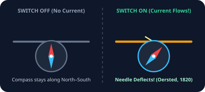

NCERT Class 8 Curiosity • 13 Crisp SVG Diagrams
NCERT Class 8 Curiosity • 13 Crisp SVG Diagrams


 Did You Know? #1
Did You Know? #1- ✓The 1820 Breakthrough: Danish professor Hans Christian Oersted (1777–1851) discovered that closing a circuit deflected a nearby magnetic compass needle.
- ✓Temporary Effect: Magnetic field exists ONLY while current flows; when switched OFF, the compass snaps back to North–South.
- ✓Penetrates Non-Magnets: Magnetic effect passes cleanly through cardboard, glass, wood, and plastic kept between wire and compass.
- ✓CHS Exam Trap: Current passing through iron, copper, aluminium, OR nichrome coils ALL deflect a compass needle!

Switch OFF vs Switch ON — Oersted's Discovery (1820)
 10. CHS Master Comparison Tables
10. CHS Master Comparison Tables 11. Interactive CHS Rapid-Fire Flashcards (14 Cards)
11. Interactive CHS Rapid-Fire Flashcards (14 Cards) Quick Revision
Quick Revision